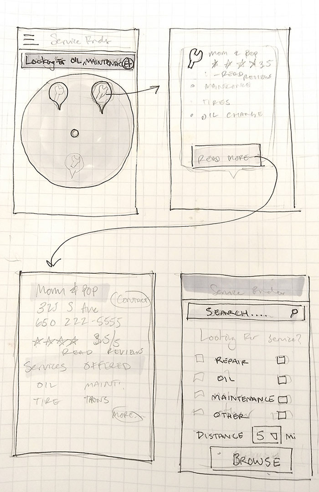

A 6-Hour Design Proposal for Automotive Yelp
As part of the interview process for a startup, I was given the challenge to create a UI for desktop and mobile that would serve as the access point to finding automotive service, much in the way Yelp finds restaurants.
The requirements for the app were as follows:
I began by analyzing other service-finding platforms like Google Maps/Business and Yelp, and thinking about what made them useful. I liked the ratings sytem for both platforms, and both behaved similarly when using the map function to find businesses.
I tried to emphasize simplicity in my design, as I know that servicing one's car is a trial in itself, so whatever the platform offered needed to be straightforward and simple. I took what I found and drew up some paper wireframes. Once I had a feel for what I needed to build, I mocked up my concepts with Sketch.
For my final design, I made both mobile and desktop illustrations, drawing from Google Maps and Yelp as inspirations.
I didn't win the challenge, but I gained the valuable experience of more heuristic analysis, tight design deadlines, and building applications for different sized screens.